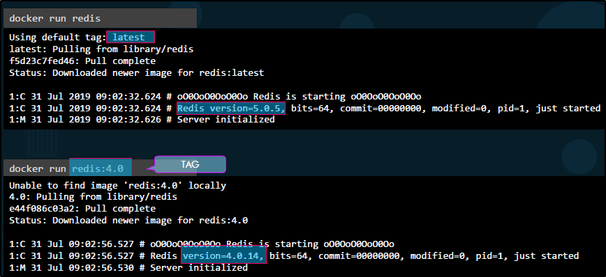

docker run software:version:
Possiamo usare ":" e la versione di un software a nostra scelta,
altrimenti userà come tag "latest".
Questo comando è utile se necessitiamo di versioni vecchie o differenti.
Tutto il software:version è chiamato "tag".
Per sapere ogni immagine quali tag ha, possiamo vedere sul Docker Hub!

Option -i and -t:
Possiamo usare l'opzione "-i" per runnare in modalità interattiva,
con l'opzione "-t" per un semplice motivo.
Molte app hanno necessità di un terminale, ma usano quello del Container.
Per usare il nostro, ci basta usare l'opzione "-t"

Quando runniano un app,
l'host sul quale si trova il Container si chiama "Docker Engine" o "Docker Host"

Come un utente accede alla tua app?
L'app di prima ascolta sulla porta 5000, ma che IP possiede?
Due opzioni:
1) Ogni Docker Container possiede un proprio IP, ma è un IP Interno ed accessibile solo dall'interno dell'Host.
2) Usare l'IP del Docker Host, ma va mappata la porta 5000 con una porta libera sul Docker Host

I Container hanno dati a loro riferiti.
Questo vuol dire che se un Container muore, perdi i suoi dati.
Per evitare ciò, puoi salvare i dati di una cartella del Container
su una cartella del Docker Host con l'opzione -v

docker inspect [ContainerName or ID]:
Permette di ottenere tutti i dettagli di un container con formato JSON.

docker logs [ContainerName or ID]:
Possiamo usare il comando LOGS per saperne di più dell' STDOUT.